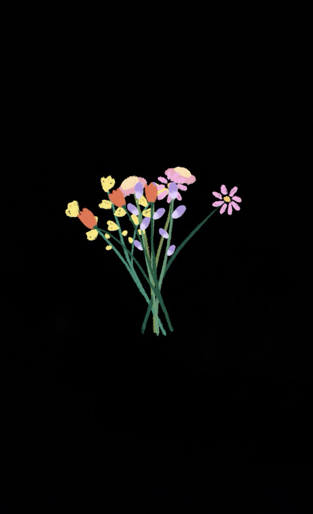

Pour la future mère de mes enfants

clic
Désolé du retard. J'étais en train de coder le site.
Je sais que c'est compliqué entre nous en ce moment. Mais je t'aime ma future femme de mes enfants.
Fermer